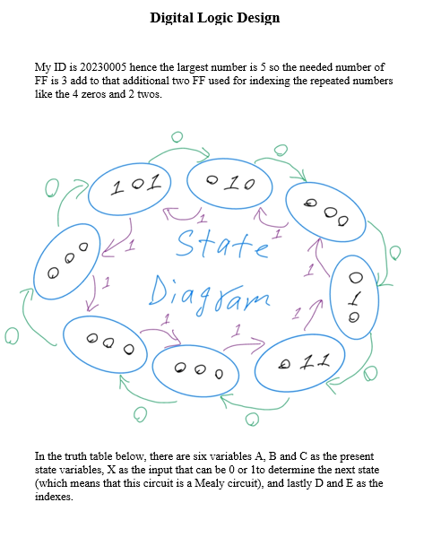
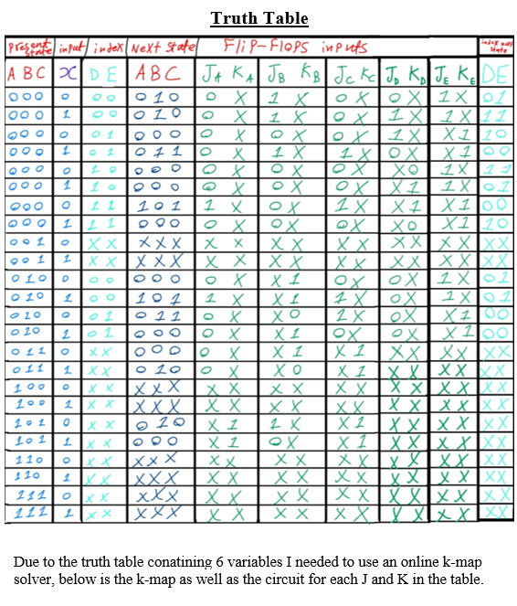
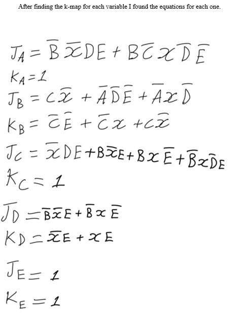
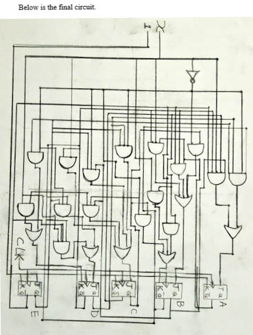

JK Flip-Flop Counter - Bidirectional Synchronous Design
Project Overview
JK Flip-Flop Counter project is a digital logic design project focused on implementing a
bidirectional counter based on a specific university ID. The counter switches between forward and
reverse sequences depending on an external input. The design includes state diagrams, excitation tables,
K-map simplifications, and circuit implementation as per the course requirements.
Implemented Features
- Counter Design: Based on student ID sequence, both forward and reverse
- Synchronous Logic: All flip-flops triggered by a common clock signal
- External Control: A 1-bit input selects counting mode (0 = forward, 1 = reverse)
- State Encoding: Each digit encoded using binary and mapped to transition states
- JK Flip-Flops: Excitation tables used to derive J and K input logic
- Karnaugh Maps: Used for logic minimization of J and K inputs
- Looping Counter: Cycles continuously through ID-based sequence
Example
If the student ID is 20198765, the counter sequences will be:
- Input = 0 (Forward): 2 → 0 → 1 → 9 → 8 → 7 → 6 → 5 → (loop)
- Input = 1 (Reverse): 5 → 6 → 7 → 8 → 9 → 1 → 0 → 2 → (loop)
Design Diagram




Final Project — Digital Logic Design
Princess Sumaya University for Technology